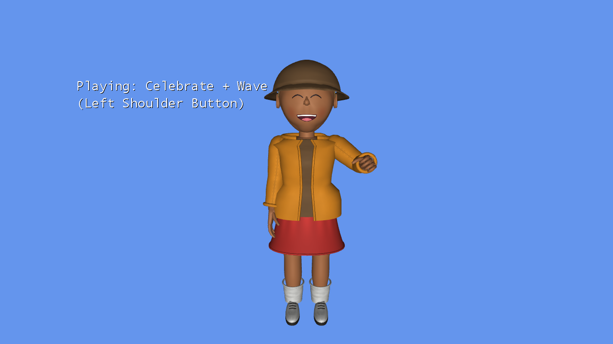

Avatar Multiple Animations
Ported from Microsoft's XNA 4.0 Avatar Multiple Animations Sample for Xbox 360.
Source for this sample on GitHub ↗

Play ▸Opens in a new tab. Click the game canvas to focus the keyboard. CNA supplies its own avatars and preset motions; their appearance and timing differ from Xbox avatars. Keyboard emulation is enabled alongside gamepad input. Documented differences ↗
About this sample
This sample plays two animations on different parts of one avatar at the same time. It takes Celebrate for the body, then replaces the right-arm subtree with Wave. The remaining bones keep Celebrate, so the avatar can celebrate and wave at once.
Cycle between the combined pose, Celebrate alone and Wave alone to compare them. Both animations continue playing in every mode, and the facial expression comes from Celebrate as in the original sample. You can orbit the camera or create another random avatar.
Controls
| Action | Keyboard | Gamepad |
|---|---|---|
| Cycle combined / Celebrate / Wave | Q | Left shoulder |
| New random avatar | E | Right shoulder |
| Orbit camera | Arrow keys | Right stick |
| Zoom out / in | Z / C | Left / right trigger |
| Reset camera | Right Shift | Right stick click |
| Stop the sample | Escape | Back |